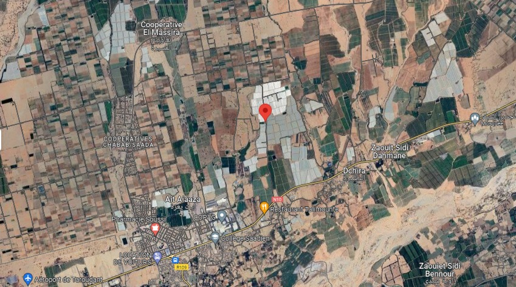

Bienvenue sur Banature!
Découvrez Banature : votre destination bananes par excellence. Explorez nos rubriques dédiées aux origines, bienfaits et recettes autour de ce fruit jaune délicieux. Plongez dans l'univers des bananes avec nous !
À Propos
À Propos de Banature Bienvenue chez Banature, le paradis des amateurs de bananes! Fondée il y a plusieurs décennies par des passionnés de fruits exotiques, Banature est bien plus qu'une simple entreprise. Nous sommes des cultivateurs engagés dans la culture responsable et durable de la délicieuse banane jaune. Notre mission est de vous offrir les meilleures bananes, cultivées avec amour et soin dans nos plantations luxuriantes. Nous mettons en avant la qualité, la fraîcheur et le goût authentique de ce fruit exquis. Chez Banature, nous croyons en une production respectueuse de l'environnement et en des pratiques agricoles durables. Nos agriculteurs s'efforcent chaque jour de préserver la biodiversité tout en vous offrant des bananes d'une qualité incomparable. Explorez notre site pour découvrir l'histoire fascinante de la banane, ses bienfaits pour la santé, ainsi que des recettes innovantes pour profiter pleinement de ce fruit polyvalent. Rejoignez-nous dans cette aventure fruitée et découvrez l'univers merveilleux des bananes avec Banature!


Localisation
Taroudant (30°31'29.0"N 8°46'59.5"W)
Équipe
Ait El Fadil Mohammed
Fondateur et Directeur Général


Contact
numero tel: +212 661-864085